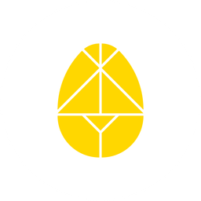

The AI-native StudioAwakeVC is a venture studio for the age of AI. We incubate and co-create companies with founders, operators, and domain experts — from thesis to company to scale.
The distinction that matters: an AI-augmented company uses AI to speed up what it already does. An AI-native company could not exist without AI — its business model, product, and operating architecture depend on it from day one.
What We Do
We start with a market thesis: a structural shift in how value is created or captured that most incumbents are too slow to exploit. We work hands-on — not as advisors — across product, technology, positioning, and launch. We share protocol-layer infrastructure across ventures so each new company inherits distribution and operating leverage from the ones that came before.
The repeatable pattern is: Incubate → Co-create → Scale.
- Incubate — Turn market shifts, founder insight, and unresolved customer pain into focused venture concepts.
- Co-create — Work hands-on with founders across product, technology, and go-to-market.
- Scale — Connect ventures to ecosystem partners, distribution systems, capital pathways, and operating infrastructure.
Why AI-native Changes the Model
Traditional venture studios and VC funds were optimized for a world where scaling required large teams, long timelines, and high capital expenditure. AI-native ventures invert those assumptions:
- Smaller founding teams reach further. AI agents handle execution, coordination, and research that previously required hiring. A two-person team with the right agent stack can now operate at the pace of a team of twenty.
- Protocol-first distribution. Rather than building each company's distribution from scratch, AI-native ventures share infrastructure — coselling patterns, agent networks, and identity layers — that compound in value as the portfolio grows.
- Faster capital efficiency. Leaner teams and shared infrastructure mean ventures can validate product-market fit with less capital and reach profitability earlier. The model works at earlier stages and smaller check sizes than traditional studios.
- Agents as operators. The ventures we build are designed to be increasingly operated by AI agents over time, freeing human bandwidth for judgment, creativity, and relationship. That isn't a feature — it's the architecture.
The Coselling Pattern
Running through every venture in the portfolio is a single operating pattern: coselling. Community-driven, agent-amplified distribution — where trusted humans and AI agents collaborate to bring products to market through relationships rather than interruption. Coselling.ai is the infrastructure; every venture in the portfolio is a proof point.
The Protocol Layer
AwakeVC builds ventures on top of shared infrastructure: Opentangle for programmable organizations, Intergraph for agent markets, and Coselling.ai for community commerce. This isn't a portfolio strategy — it's an architectural one. Each new venture adds to the protocol layer, and each protocol layer improvement benefits every venture.
Who We Work With
We work with founders who have deep domain expertise in a market that is being reshaped by AI. We work with operators who want to build a new company rather than join one. We work with enterprises that want to spin out a venture rather than acquire one.
If you see a new market forming, a business that wants to transform, or a career chapter that needs a larger arena — start a co-creation enquiry.